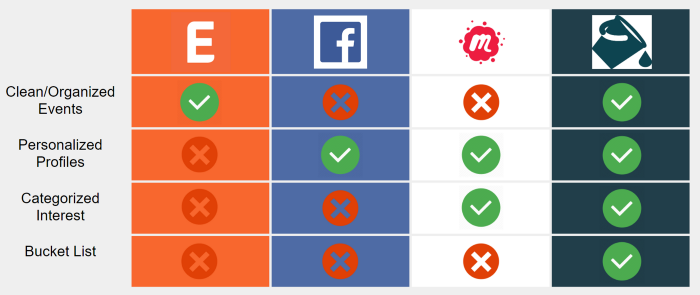

Ripple is an app that helps seniors accomplish their bucket list while meeting people and making new connections along the way.
“Voted Best App out of 12 by instructional staff and peers”
Timeline: 8 weeks
Tools: Adobe XD, Illustrator, Pen and Paper
The Problem
Depression is an issue that seniors go through in their old age; Their families sometimes get to busy to interact with them and are, at times, left alone in retirement homes and forgotten about.
I wanted to create a way for them to be able to fill their lives with new excitement and in turn, meet new people along the way that would share their enthusiasm for their newfound hobbies. This is why my team and I created Ripple.
Needfinding
Due to time constraints and a lack of availability, my team and I were unable to do the interviews and field research with senior citizens to identify their core pain points. Instead, I decided to focused on discovering these through online research and the personal experience we have had with our grandparents. From our research, we found a few common user needs.
Some of these included:
- Social interaction
- Health and exercise
- Memory problems
- Traveling
- Finishing their bucket list
Storyboarding
From these common user needs, my team and I created 10 different personas and storyboards then narrowed it down to two that we felt really encapsulated these needs.
-
Facebook seems too complicated for elderly people to explore new events and new hobbies. However, they still want to make new friends and have new experiences. The “Bucket List App” can solve this problem through user-friendly interfaces and event explorer functions which can also help the users to look for others who are also interested in the same events. Eventually, they can reach their goals — making new connections and having new experiences.
-
Mark had been working in a long shift job in the previous 45 years. His wife passed away and his children are very busy. The problem he is having is that he always feels bored and lonely in his daily life and always wants someone to accompany him. However, after his daughter introduced the “Bucket List App” to him, he found that there are lots of events, classes, and people of the same age, so he can make new friends and have a new experience. More importantly, he can try Zumba which is an item from his wife’s bucket list.
Accessability
Keeping in mind the target audience and the pain points my team and I gathered, I thought it would be important to take some time to focus on the accessibility design of our application. From my research and brainstorming, I met with my team and we decided to follow the guidelines found here.
These points are:
- Maintain a consistent interface through applications.
- Allow images and text to be resized.
- Give clear instructions about how to control the interface during tasks.
- Clearly delineate what is expected behavior during a task.
- Clearly delineate tutorials from actual training tasks.
- Show demonstrations in tutorials that match the difficulty of actual tasks.
- Allow adequate time between instructions and the start of tasks.
- Display progress through a task.
- Allow tasks to be skipped.
- Clearly delineate when a task is complete.
Prototyping and User Flow
Now that my team and I have better defined what we are looking to answer in our app, I began to design what the app will look like and how it will flow.
First sketches and user flow of the app.
Some key features we wanted to make sure our app had are an Explore page, Bucket List, Bookmarks, and Activities page.
Beta prototype of the app
Usability Testing
Due to the time and availability constraints, Me and a partner performed usability testing with our classmates and the instructional staff. We tested with the 12 other groups and 3 instructional staff. Some of the feedback we received included things like, make sure the text and buttons are large, and add text with icons so the user won’t have to guess what they mean.
From this great feedback, My team and I then went to design our next and final prototype, do a competitive analysis, and ready for our presentation.
Competitve Analysis
Branding
We decided to name our app ‘Ripple’. A ripple effect is caused when a droplet hits a larger body of water. We felt that our app, which would get people out there and experience new things, and meet new people, was akin to this phenomenon.
We made our logo the bucket, as we felt the best direction to market our app would be to really push the bucket list idea. The bucket list is a checklist comprised of one’s aspirations, which would make our app more appealing than the competition.
Marketing
For this project, my team and I also created a demo and commercial for our application. This was a great bonding activity for our group and we got to know each other a bit better.
Final Prototype
After all of our hard work, we finished our final prototype and presented it alongside a “shark tank” style pitch to our peers and instructors.
We ended up winning Best App out of the 12 other presentations, voted by our instructional staff and peers!
The Future
If I were to continue this project into the future, I would work on integrating this app with other apps, make connections worldwide with other countries, and make improvements on accessibility. I would also love to do more user research and testing with the target audience to gather better and deeper insights and pain points that I could address.
Final Thoughts
I am very grateful for this experience and the people I was able to share it with. I learned a lot about the pace of short term projects, design thinking, and improved my skills with design tools. Even though each day was jam-packed with things to do, I thoroughly enjoyed and had fun with every moment of it.